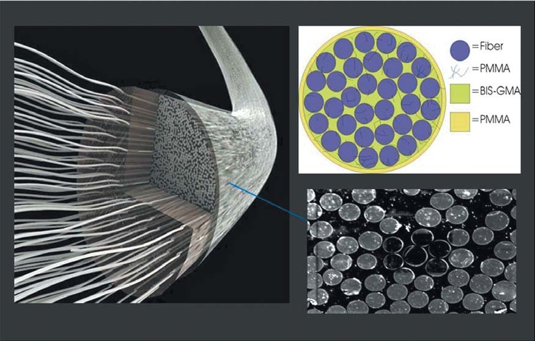
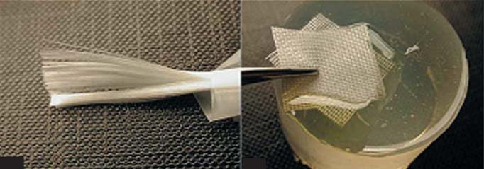
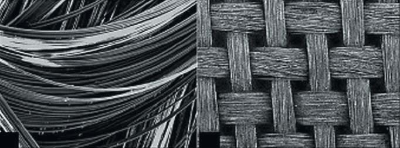
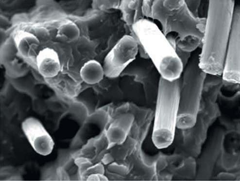
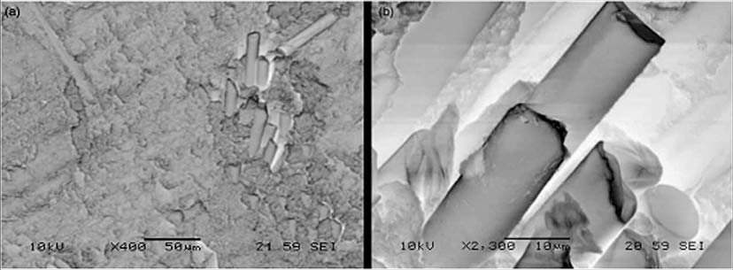
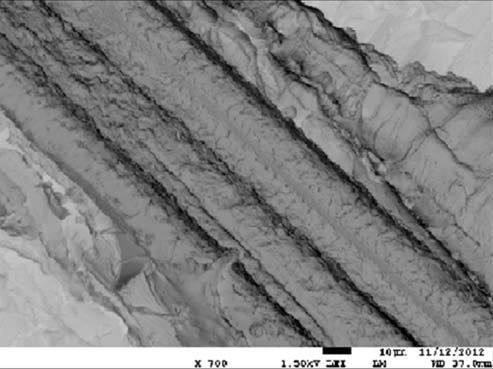

Огляди · журнал «ДентАрт» 2022 №1
Найновіші дані про реставраційні композити на основі скловолокна. Частина 1
An update on glassfiber dental restorative composites: a systematic review
Стоматологія швидко розвивалася протягом останніх кількох десятиліть, коли інноваційні методи прийшли на заміну традиційному лікуванню, оскільки застосування нових стоматологічних матеріалів тепер дає кращі результати.
Вступ
ХХІ століття раптово висунуло перед стоматологією нову парадигму щодо очікуваних стандартів сучасного лікування. Ефективність традиційних методів та процедур, які застосовувалися протягом багатьох років, ставиться під сумнів у контексті доказової медицини та нових інформаційних технологій.
У галузі реставраційної стоматології значні досягнення у дослідженнях стоматологічних матеріалів привели до того, що нині стали доступними естетичні адгезивні реставрації, і це вивело професію у «постамальгамову епоху». Клініцисти керувалися певними критеріями під час вибору стоматологічних матеріалів: аналіз проблеми, вимоги до матеріалів, доступність матеріалів та їхні властивості. Композити використовувалися для прямих або непрямих реставрацій, відновлення дефектів тканин зуба (наприклад, при гіпоплазії) або як пломбувальні матеріали. Композити стали матеріалом вибору для реставрації передніх зубів – у відповідь на нинішню тенденцію до мінімально інвазивної стоматології та зростання попиту пацієнтів на естетичні композитні реставрації. За останні півстоліття композити стали настільки затребуваними, що створення міцного «міжфазного» зв’язку між матрицею та армувальним компонентом стало критично важливим. Використання зшиваючих агентів, що хімічно вступають у реакцію з матрицею і армуванням, та/або хімічної модифікації поверхонь одного або обох компонентів були найуспішнішим засобом хімічного зв’язку матриці з інкапсульованим армувальним компонентом.
Традиційно стоматологічні композити, які використовуються для прямої естетичної реставрації, складаються в основному з полімерної матриці та дисперсних армуючих частинок неорганічного наповнювача. Розробка мономеру метакрилату, мономеру бісфенол-А гліцидилметакрилату (Біс-ГМА) і стоматологічних композитів компанією Bowen та їх знайомство з реставраційною стоматологією були настільки успішними, що незабаром вони були прийняті як естетичний пломбувальний матеріал; на їх властивості впливають розмір і об’єм частинок наповнювача, склад смоли, зв’язок між матрицею та наповнювачем і умови полімеризації. Композитні реставрації та вініри ізотропні, не мають специфічної орієнтації наповнювача. Однак властивості цих композитів поліпшилися, зокрема з погляду зносостійкості, за рахунок зменшення розміру частинок і використання волоконного наповнювача.
Концепція композитів, армованих волокном
Композити, армовані волокном, є типовими композитними матеріалами, які складаються з полімерної матриці, армованої тонкими волокнами. Полімерна матриця, що складається з полімеризованих мономерів, виконує функцію утримування волокон разом у композитній структурі. Матриця може впливати на міцність на стискання; міжшаровий зсув та внутрішньопластинчасті зсувні властивості, взаємодію між матрицею і волокном та дефектами в композиті. Різні методи виготовлення використовуються для виробництва полімерів, армованих частинками/волокнами, включаючи ін’єкційне формування, компресійне формування, гідростатичну екструзію та самоармування. Використані волокна і їх властивості подано у табл. 1.
| № | Волокна | Властивості |
|---|---|---|
| 1 | Вуглець/епоксидна смола | Гарні показники втомної міцності та міцності на розтягування, а також підвищений модуль пружності, але вони недостатньо естетичні |
| 2 | Поліарамід | Погано розрізається та полірується, мануально складний у застосуванні |
| 3 | Поліетилен надвисокої молекулярної маси | Погана адгезія з полімерною матрицею і, отже, не має достатньої міцності |
| 4 | Скло | Поліпшена адгезія до полімерної матриці з кращими механічними властивостями, а також має гарні естетичні властивості |
Скловолокно в армуванні композитів
Композити аморфні (некристалічні), гомогенні і наповнені структурно тривимірною мережею з кремнію, кисню та інших атомів, розташованих невпорядковано. Для застосування у стоматології полікарбонат, поліуретан та полімери на акриловій основі, такі як поліметилметакрилат (ПММА) та бісфенол-А гліцидилметакрилат (Біс-ГМА), були в основному посилені скловолокном і зазвичай обробляються силановим зв’язувальним агентом для посилення хімічного зв’язку між волокном та полімерною матрицею. Здатність армувального волокна поєднуватися з полімерним композитом важлива для їх ефективності.
Фізичні характеристики композиту, армованого скловолокном, і зуба подібні, тому відсоток невдач цих композитів менший у порівнянні з композитами на основі смоли. Композити на основі смоли мають невідповідні фізичні властивості, щоб їх можна було використовувати для незнімного протезування. Для цієї мети може використовуватися смола, наповнена волокнами, які можуть бути виготовлені або в лабораторії для традиційного дизайну препарування зубів, або безпосередньо в кріслі. Склад наявних у продажу армованих композитів зі скловолокна подано у табл. 2. На рис. 1 – схематична структура скловолокна, армованого в полімерній матриці. Ці комерційні матеріали, армовані скловолокном, призначені для створення кукси зуба, показали поліпшені на 10% фізичні властивості порівняно зі звичайними матеріалами.
| Основний матеріал | Виробник | Склад | Процедура виготовлення |
|---|---|---|---|
| Композит, армований попередньо просоченим E-склом | Vectris Pontic, Ivoclar Vivadent, Шаан, Ліхтенштейн | Біс-ГМА (24,5%), диметакрилат триетиленгліколю (6,2%), декандіолу диметакрилат (0,3%), уретандиметакрилат (0,1%), високодисперсний діоксид кремнію (3,5%), каталізатори та стабілізатори (<0,3%), пігменти (<0,1%), попередньо просочені Е-скловолокна (65,0%) | Початкова полімеризація протягом 1 хв. світлополімеризатором (Targis Quick™, Ivoclar-Vivadent). Фінальна полімеризація у фототермічній установці (Targis Power™, Ivoclar-Vivadent) протягом 25 хв. |
| Композит, армований попередньо просоченим S-склом | FiberKor, Pentron Corporation, Уоллінгфорд, Коннектикут, США | Попередньо просочені S-скловолокна (60%) в 100% матриці Bis-GMA | Початкова полімеризація протягом 1 хв світлополімеризатором (Alfa Light II™, Моріта, Осака, Японія). Фінальна полімеризація фотополімеризатором (Alfa Light II™) протягом 15 хв. |
| Композит, армований просоченим E-склом | Stick StickTech, Турку, Фінляндія | E-скловолокно, просочене поліметилметакрилатом | — |

Композити, армовані скловолокном, знайшли своє застосування у стоматології і нині широко використовуються для незнімних часткових протезів, ендодонтичних штифтових систем та ортодонтичних незнімних ретейнерів. Проте автори не змогли знайти нових оглядових статей, які охоплюють основні аспекти армованих скловолокном композитів. Отже, мета цього огляду полягає в тому, щоб розбити цю тему на складові частини і подати принципи, що базуються на доказових даних, які є обґрунтованими з точки зору стоматології. Стаття сфокусована лише на експертній оцінці, а критичний аналіз цього матеріалу виходить поза рамки літературного огляду. Спочатку огляд розпочався з MEDLINE, Book Chapters, матеріалів конференцій/симпозіумів, дисертаційних досліджень in vitro та результатів клінічних випробувань, опублікованих з 1964 до 2014 року. Пошук був обмежений журналами про стоматологію, матеріали і біоматеріали, усі цитати були зіставлені, а повторювані видалені. По можливості повні тексти робіт були отримані з журналів. Якщо не було можливості отримати той чи інший журнал, були розглянуті резюме, якщо вони доступні в електронному вигляді.
Початкова стратегія пошуку привела до більш ніж 300 статей. Загальна кількість статей, що відповідали критеріям включення в огляд, була 153. Більшість систематичних оглядів були присвячені властивостям композитів, армованих скловолокном, впливу факторів, таких як орієнтація волокон, кількість волокон, просочення волокон полімерами, адгезія волокон з полімерами, вплив вмісту, розподіл волокон і водопоглинання. У цих дослідженнях вивчалися механічні, фізичні, теплові та біологічні властивості композитів, армованих скловолокном; клінічне застосування, включаючи протезування, ендодонтію, реставрацію зубів, ортодонтичні ретейнери і утримувачі місця та пародонтальні шини. Також вівся неавтоматичний пошук вручну за посиланнями у вибраних статтях.
Типи скловолокна
У процесі удосконалення волокон важливими були вимоги щодо параметрів волокон, які визначаються їх призначенням та особливостями технології виробництва. Отже, скло синтезують у різних системах, що забезпечують різні якісні властивості волокон. У таблиці 3 подано різні типи скловолокна в залежності від їх складу та властивостей. Компоненти скловолокна, що використовуються у складі різних стоматологічних матеріалів, можна розподілити на шість категорій залежно від їхнього складу та застосування.
| Компоненти | A-скло (%) | E-скло (%) | C-скло (%) | AR-скло (%) | R-скло (%) | S-скло (%) |
|---|---|---|---|---|---|---|
| SiO2 | 71 | 53–55 | 56–58 | 62 | 75,5 | 62–65 |
| Al2O3 | 3 | 14–16 | 12 | 0,8 | 0,5 | 20–25 |
| CaO | 8,5 | 20–24 | 17–22 | 5,6 | 0,5 | – |
| MgO | 2,5 | 20–24 | 2–5 | – | 0,5 | – |
| B2O3 | – | 6–9 | – | – | 20 | 0–1 |
| K2O | – | <1 | 0,4 | – | 3,0 | – |
| Na2O | 15 | <1 | 0,1–2 | 14,8 | – | 0–1 |
| Fe2O3 | – | <1 | 0,2–2 | – | – | 0,2 |
| ZrO2 | – | – | 2 | 16 | – | – |
| ZnO | – | 0–0,7 | 2 | 0 | – | – |
- Скло А (нейтральне) – це високолужне скло, що містить 25% вуглекислого натрію і вапна. Перевага цього скловолокна в тому, що воно дешевше, ніж інші види, і може використовуватися як наповнювач для пластмас, коли не ставляться жорсткі вимоги. Недоліки в тому, що матеріал має низьку хімічну стійкість до водного та лужного середовища і низьку міцність.
- Скло C (хімічно стійке) – було розроблене для застосування в інженерії, де матеріал контактує з агресивними середовищами, переважно з кислотами. Ці волокна мають гарну стійкість до корозії. Однак недоліки полягають у тому, що воно має гірші технологічні властивості у формуванні наповнювача та волокон і має низьку міцність, тому не може бути використане як теплоізоляційний матеріал.
- Скло D (з низькою діелектричною проникністю) – цей тип скла має низьку діелектричну проникність із чудовими електричними властивостями і використовується як армувальний матеріал в електронних платах і корпусі радара. Але воно характеризується низьким рівнем міцності та хімічним опором.
- Скло S – це скло з високою міцністю та модулем пружності, низькою діелектричною проникністю, воно має ліпшу корозійну стійкість до кислот. Для виготовлення цього скла потрібні великі затрати часу та фінансів. Термін служби цих скловолокон невеликий, тому їхнє використання обмежене.
- Скло AR – ці скловолокна допомогли поліпшити структурні і технологічні властивості, а також підвищити стійкість до утворення тріщин та стійкість до ударів. Висока температура плавлення і високий вміст цирконію обмежують сферу їх застосування.
- Скло E (електричне) – це кальцієво-алюмоборосилікатне скло з низьким вмістом лугу. Має ліпші електроізоляційні властивості та гідрофобність. Побоювання, пов’язані з цим волокном, зумовлені наявністю летючих компонентів (оксид бору і фтор), що призводить до порушення хімічної однорідності скла та забруднює навколишнє середовище. Однак більш ніж 50% скловолокна, що використовується для армування, становить E-скло. Скловолокно E використовується в основному у стоматології. Являє собою суміш аморфних фаз та оксиду кремнію, оксиду кальцію, оксиду барію, оксиду алюмінію і деяких оксидів лужних металів. Волокна містять слідові кількості Na2O, MgO, TiO2, Fe2O3 та F. E-волокна, що використовуються у стоматології, мають щільність 2,54 г/см³ і заявлену міцність на розтягування і модуль пружності 3,4 ГПа та 73 ГПа відповідно. S-скло також аморфне, але відрізняється за складом і має більшу твердість і модуль у порівнянні з Е-склом і більшу стійкість до пластичних деформацій, ніж E-скло. Заявлена міцність на розтягування і модуль пружності становлять 800 МПа і 66 ГПа відповідно. Вміст оксиду кремнію, оксиду алюмінію та оксиду магнію вищий, ніж у Е-склі, але S-скло має незначну кількість іонів лужних та лужноземельних металів.
Фактори впливу
Деякі фактори, які можуть вплинути на властивості композитів, армованих скловолокном, подано в табл. 4.
| Орієнтація волокон |
| Кількість волокна (об’ємна частка) |
| Обробка поверхні |
| Просочення волокна матричним полімером |
| Адгезія волокна до матричного полімеру |
| Властивості волокна у порівнянні з властивостями матричних полімерів |
| Розподіл волокон |
| Сорбція води матрицею композитів, армованих скловолокном |
Орієнтація волокон
Скловолокна можуть розташовуватися у різних напрямках (рис. 2): 1) односпрямовано розташовані шари волокон; 2) переривчасті короткі та довгі волокна (двовимірноорієнтовані), литі під тиском; і 3) текстильні тканини (ткані, трикотажні та плетені полотна). Односпрямовані безперервні волокна анізотропні (мають різні властивості у різних напрямках), вони можуть мати переваги у різних сферах застосування. Двоспрямовані доступні в різних текстильних структурах, таких як лляне та саржеве переплетення. Вони мають ортотропні властивості (однакові властивості у двох напрямках з різними властивостями в третьому, ортогональному напрямку), волокнисте переплетення є прикладом двоспрямованого армування полімерів, і випадкові (рубані) орієнтовані волокна мають ізотропні властивості.


Попередні дослідження з орієнтації волокон у композитах, армованих скловолокном, зосередилися на наслідках питання спрямованості армувальних волокон (хаотична чи поздовжня орієнтація). Загальновизнано, що орієнтація скловолокна довгою віссю перпендикулярно доданій силі приведе до посилення міцності. Навпаки, сили, паралельні довгій осі волокон, призводять до руйнування, зумовленого переважанням матриці, і, отже, мають незначний армуючий ефект. Стратегії проєктування іноді використовуються для забезпечення різноспрямованого армування для мінімізації високої анізотропії односпрямованого армування волокнами. Різноспрямоване посилення, проте, супроводжується зменшенням міцності у будь-якому напрямі у порівнянні з односпрямовано орієнтованим волокном. У більшості випадків скловолоконне армування було позиціоноване у центрі композитного зразка. Механічні властивості композитів, армованих скловолокном, також залежать від напряму волокон у полімерній матриці. Безперервні односпрямовані волокна показали найвищу міцність і жорсткість для композиту, але тільки в одному напрямку, тобто у напрямку волокон. Отже, армуючий ефект односпрямованих волокон анізотропний – на відміну від тканих волокон, які армують полімер у двох напрямках, а композит також має ортотропні механічні властивості. Якщо волокна орієнтовані безладно, механічні властивості однакові у всіх напрямках і механічні властивості ізотропні.
Міцність композитних матеріалів, армованих односпрямованим поздовжньо орієнтованим скловолокном, при дії навантаження до максимуму вздовж напрямку волокна знижується при дії вектора сили, орієнтованого під кутом до напрямку волокна, тому односпрямоване скловолокно має значно більшу міцність, ніж те, де волокна орієнтовані у двох напрямках. Композит з довшими волокнами продемонстрував більшу зносостійкість. Це можна пояснити тим, що повну силу для композитів, армованих скловолокном, можливо, не використовували з волокнами довжиною менш критичною. Критична довжина скловолокна залежить від міцності волокна та міжфазної міцності на зсув. Крім того, короткі волокна можуть легко згрупуватися в кластери і призвести до утворення слабких ділянок у композиті. Теоретично армуючий ефект волокнистих наповнювачів заснований не тільки на передачі напруги від полімерної матриці до волокон, але і на можливості окремих волокон виступати в ролі стоперів для тріщин. Можливо, волокна 3 мм, орієнтовані паралельно одне одному, мали міцність безперервного односпрямованого композиту, армованого скловолокном.
Гаруші та співавт. і Манхарт та співавт. вивчали зносостійкість кількох комерційних стоматологічних композитів. Було виявлено, що короткі скловолокна можуть бути легко видалені з матриці, що призводить до підвищеного зносу матеріалу. Сюй та співавт. довели, що збільшення довжини скловолокна в цілому збільшувало межу міцності композиту, армованого скловолокном, та його стійкість до руйнування. Ці властивості клінічно значущі і впливають на довговічність реставрації. Орієнтація скловолокна також впливає на теплові властивості матеріалу. Тепловий коефіцієнт змінюється в залежності від напрямку волокон. Це може мати клінічно значущий вплив, зокрема на адгезію облицювального композиту, армованого скловолокном, до каркасу з часткового незнімного протеза та адгезію композиту до тканин зуба. Орієнтація волокон впливає на лінійну усадкову деформацію. У випадку безперервних односпрямованих композитів, армованих скловолокном, деформація усадки вздовж волокна була низькою, тоді як основна усадка відбувалася в поперечному напрямку до орієнтації волокна. Подібно до безперервних односпрямованих композитів, армованих скловолокном, двоспрямовані продемонстрували дуже невелику усадку в усіх напрямках. Армований скловолокном композит з хаотично орієнтованими волокнами показав низьку полімеризаційну усадку, але дещо вищу, ніж у двоспрямованих армованих скловолокном композитів. Короткі волокна також були ефективні в мінімізації усадки. Рублені волокна були уривчасто розподілені в матриці, так що кожне волокно було набагато коротшим, ніж розміри складового зразка. Гібридні композити є поєднанням двох і більше типів волокон.
Кількість волокон
Кількість скловолокна слід визначати за об’ємом, а не за вагою. Об’єм волокна (Vf) розраховують за спеціальною формулою, де: Wf – вагова частка волокна, ρf – щільність волокна, Wr – масова частка смоли, ρr – щільність смоли.

Рис. 3 показує кількість волокон (об. %) у полімерному матриксі. Як правило, об’ємна частка волокна в композиті, армованому скловолокном, висока, до 60% об’єму, однак у стоматології волокниста фракція порівняно невелика. Це пов’язано з тим, що скловолокно має бути покрите шаром ненаповненого полімеру або з шаром композитного наповнювача у вигляді частинок. Лассіла і Валліту та Каллаган і співавт. повідомили про зносостійкість композитів, армованих скловолокном з різною концентрацією волокна за об’ємом. Було встановлено, що зразки скловолокна з масовою часткою 7,6%, можливо, містять дуже багато волокон, у результаті утворюються кластери волокон з невеликою часткою матриксу. Є значні взаємодії між скловолокном, що призводить до адгезії між волокном та матрицею. Якщо волокна витягуються з матриці або матриця видаляється навколо волокон, це призводить до високої швидкості зношування. Висока наповненість скловолокном може призвести до передчасного пошкодження цих волокон, окрім значної кількості випадання волокон. Оптимальна кількість волокна для гарної зносостійкості становить від 2,0 до 7,6% масової частки для матриці. Існує значна взаємодія між волокнами, що призводить до поганого зв’язку між волокнами та матрицею. СЕМ-фотографії (рис. 4) показують, що за такої масової частки, очевидно, вони погано зчеплені з матеріалом матриксу.

Імпрегнація волокна полімерною матрицею
Армування скловолокном ефективне тільки тоді, коли навантаження може бути перенесене з матриці в армуючу фазу, а це може бути досягнуто тільки тоді, коли волокно повністю з’єднується за рахунок зв’язування з матрицею, а в стоматологічних композитах воно зазвичай імпрегноване. Рис. 5 показує просочення скловолокон полімерним матриксом. Ступінь імпрегнації скловолоконного армування, що використовується у стоматології, впливає на властивості композиту, армованого скловолокном. Недостатнє просочення створює порожнечі між матрицею та волокном, і стійкість до навантажень композитів, армованих скловолокном, знижується. Крім того, механічні властивості, такі як міцність на згинання та модуль композитів, армованих скловолокном, залишаються далекими від теоретично розрахованих значень. Ще одна проблема, пов’язана з поганою імпрегнацією, – абсорбція води. Тріщини та порожнини у шарах пропускають воду, що знижує міцність зв’язування і може призвести до гідролітичного розщеплення полісилоксанової мережі композитів, армованих скловолокном. Це також викликає дисколорит через проникнення мікроорганізмів ротової порожнини в порожнини погано просоченого композиту, армованого скловолокном.

Ці порожнини також діють як резервуари кисню, що дозволяє кисню інгібувати вільнорадикальну полімеризацію акрилової смоли композиту. Повну міру імпрегнації скловолокна можна отримати, якщо волокна попередньо просочити полімерами, мономерами та/або поєднанням того й іншого. Попередня імпрегнація волокна впливає не тільки на ступінь просочення, але також на адгезивні властивості остаточно полімеризованого композиту, армованого скловолокном. Якщо волокна попередньо просочені легкими біфункціональними акрилатними або метакрилатними мономерами, що полімеризуються, полімерна матриця активно поперечно зшита, і зв’язок ґрунтується на вільнорадикальній полімеризації та взаємній дифузії мономеру нової смоли. Зв’язок між субстратом композиту, армованого скловолокном, і смолою може ґрунтуватися на непрореагованих вуглець-вуглецевих подвійних зв’язках функціональних груп на поверхні полімерної матриці. Однак можливість отримання зв’язку вільнорадикальною полімеризацією низька через відносно невелику кількість вуглець-вуглецевих подвійних зв’язків, що не прореагували, на поверхні полімеру.
Ще одна можливість адгезії нової смоли до старого композитного субстрату ґрунтується на взаємній дифузії мономерів у субстрат. Зв’язок, заснований на взаємній дифузії мономерів, може бути отриманий, якщо субстрат являє собою частково незшитий полімер і мономери нової смоли мають лінійну розчинну здатність фази субстрату, таку як взаємопроникна полімерна сітка. У взаємопроникній полімерній сітці лінійні фази і зшита полімерна мережа не пов’язані хімічно одне з одним. Ця незалежність полімеру взаємопроникної полімерної сітки як вирішальна властивість при адекватній адгезії, заснованій на взаємній дифузії мономерів, є затребуваною. Це може бути ситуація, коли конструкція з композиту, армованого скловолокном, потребує ремонту в ротовій порожнині або коли остаточно полімеризована робота з композиту, армованого скловолокном, виготовлена в лабораторії, фіксується до тканин зуба композитним цементом чи малов’язкими світлозатверджуваними адгезивними смолами. Попередньо імпрегнований матрикс свіжозаполімеризованого скловолоконного армування містить лінійні полімерні фази, котрі, як передбачається, поліпшують адгезію до старої основи субстрату каркасу з композиту, армованого скловолокном, до нової композитної смоли за механізмом зв’язування взаємопроникної полімерної сітки. У стоматології використовується взаємопроникна полімерна сітка, що містить лінійний полімер і крос-зшитий полімер, але вони не зв’язані разом хімічно як єдина мережа. Це було успішно використано в зубах з акрилової пластмаси та базисних пластмасах для виготовлення знімних зубних протезів.
Далі буде.Продовження огляду — механічні, адгезивні, термічні властивості, біосумісність і клінічне застосування
Читати Частину 2 →Література
- P. Magne, D. Cascione. Influence of post-etching cleaning and connecting porcelain on the microtensile bond strength of composite resin to feldspathic porcelain. J. Prosthet. Dent. 96 (2006) 354–361.
- F. J. McCabe, W. G. A. Walls. Applied Dental Materials, 8th ed. Blackwell Science, Oxford, 1998.
- F. Lutz, I. Krejci. Resin composites in the post-amalgam age, Compend. Contin. Educ. Dent. 20 (1999) 1138–1148.
- M. J. Tyas, K. J. Anusavice, J. E. Frencken, G. J.Mount. Minimal intervention dentistry – a review. FDI Commission Project 1–97, Int. Dent. J. 50 (2000) 1– 12.
- Y. Yashida, K. Shirai, Y. Nakayama, M. Itoh, M. Okazaki, H. Shintani, S. Inoue, P. Lambrechts, G. Vanherle, V. B. Meerbeek. Improved filler-matrix coupling in resin composites. J. Dent. Res. 81 (2002) 270–273.
- Food, Drug Administration (FDA), Dental Composites-Premarket Notification, US Department of Health and Human Services, 1998.
- R. L. Bowen. Dental filling material comprising vinyl silane treated fused silica and a binder consisting of the reaction product of bisphenol and glycidylaery- late, US patent 3,066,112, 1962
- R. L. Bowen. Silica-resin direct filling material and method of preparation, US patents 3,194,783 and 3,194,784, 1965.
- R. G. Craig, J. M. Power. Restorative Dental Materials, 11th ed. Mosby, 2002.
- C. M. Sturdevant. The Art and Science of Operative Dentistry, 3rd ed. Mosby, 1995.
- H. H. Xu, J. B. Quinn, D. T. Smith. Effects of different whiskers on the rein- forcement of dental resin composites. Dent. Mater. 19 (2003) 359–367.
- A. Tezvergil, L. V. J. Lassila, P. K. Vallittu. The effect of fiber orientation on t thermal expansion coefficient of fiber reinforced composites. Dent. Mater. 19 (2003) 471–477.
- M. Zhang, J. P. Matinlinna. E-glass fiber reinforced composites in dental ap- plications. Silicon 4 (2012) 73–78. 58
- H.-Y. Zhu, D.-H. Li, D.-X. Zhang, B.-C. Wu, Y.-Y. Chen. Influence of voids on interlaminar shear strength of carbon/epoxy fabric laminates. Trans. Nonferrous. Met. Soc. China 19 (2009) 470–475.
- T. Moriwaki. Mechanical property enhancement of glass fibre reinforced polyamide composite made by direct injection. Composites 27 (1996) 379– 384.
- C. E. da Silva Pinto, A. Carbajal, F. Wypych, L. P. Ramos, S. G. Kestur. Studies of the effect of molding pressure and incorporation of sugarcane bagasse fibers on the structure and properties of poly (hydroxy butyrate). Compos. A: Appl. Sci. Manuf. 40 (2009) 573–582.
- J. W. Leenslag, A. J. Pennings. High-strength poly(L-lactide) fibres by a dry- spinning/hot-drawing process. Polymer 28 (1987) 92–94.
- S. N.Nazhat, M. Kellomaki, P. Tormala, K. E. Tanner, W. Bonfield. Dynamic mechanical characterization of biodegradable composites of hydroxyapatite and polylactide. J. Biomed. Mater. Res. B Appl. Biomater. 58 (2001) 335–343.
- G. Viguie, G. Malquarti, B. Vincent, D. Bourgeois. Epoxy/carbon composite resins in dentistry: mechanical properties related to fiber reinforcements. J. Prosthet. Dent. 72 (1994) 245–249.
- L. A. Dos Santos, L. C. De Oliveira, R. Da Silva, R. G. Carrodeguas, A. O. Boschi. Fiber reinforced calcium phosphate cement. Artif. Organs 24 (2000) 212–216.
- S.H. Foo, T. J. Lindquist, S. A. Aquilino, R. L. Schneider, D. L. Williamson, D. B. Boyer. Effect of polyaramid fiber reinforcement on the strength of 3 denture base polymethyl methacrylate resins. J. Prosthodont. 10 (2001) 148–153.
- P. K. Vallittu. Oxygen inhibition of autopolymerization of polymethylmethacry- he late-glass fibre composite. J. Mater. Sci. Mater. Med. 8 (1997) 489–492.
- A. Signore, S. Benedicentia, V. Kaitsasb, M. Baronec, F. Angierod, G. Raverae. Long-term survival of endodontically treated,maxillary anterior teeth restored with either tapered or parallel-sided glass-fiber posts and full-ceramic crown coverage. J. Dent. 37 (2009) 115–121. Огляди
- L. Schlichtingab, C. M. A. de Andradaa, L. Vieiraa, G. Barrac, P. Magneb. Composite resin reinforced with pre-tensioned glass fibers. Influence of pre- stressing on flexural properties. Dent. Mater. 26 (2010) 118–125.
- K. Narva, P. K. Vallitu, H. Helens. Clinical survey of acrylic resin removable denture repair with glass-fiber-reinforced. Int. J. Prosthodont. 14 (2001) 219– 224.
- X.G. Yong. Effect of interface structure on mechanical properties of advanced composite materials. Int. J. Mol. Sci. 10 (2009) 5115–5134.
- A. G. Ashwini. Reinforcing esthetic with fiber post. Int. J. Dent. Clin. 3 (2011) 89–90.
- H. D. Stipho. Effect of glass fiber reinforcement on some mechanical proper- ties of autopolymerizing polymethyl methacrylate. J. Prosthet. Dent. 79 (1998) 580–584.
- G. Meric, J. E. Dahl, I. E. Puyter. Physicochemical evaluation of silicaglass fiber reinforced polymers for prosthodontic applications. Eur. J. Oral Sci. 113 (2005) 258–264.
- H. K. Chang, J. Chai. Strength and mode of failure of unidirectional and bidi- rectional glass fiber-reinforced composite material. Int. J. Prosthodont. 16 (2003) 161–166.
- M. Kotaki, T. Kuriyama, H. Hamada, Z. Maekawa, I. Narisawa. Annealing ef- fect in glass woven fabric composites, Part II. Bending properties, Compos. Interfaces 7 (2001) 385–397.
- Y. Tanimoto, T. Nishiwaki, N. Nemoto. Numerical failure analysis of glass- fiberreinforced composites. J. Biomed. Mater. Res. A 68 (2004) 107–113.
- V. M. Miettinen, P. K. Vallittu, H. Fross. Release of fluoride fromglass fiber- reinforced composites with multiphase polymer matrix. J. Mater. Sci. Mater. Med. 12 (2000) 503–505.
- G. S. Solnit. The effect of methyl methacrylate reinforcement with silane treat- ed and untreated glass fibers. J. Prosthet. Dent. 66 (1991) 310–314.
- P. Soo-Jin, J. Joong-Seong, L. Jae-Rock. Influence of silane coupling agents on the surface energetics of glass fibers and mechanical interfacial properties of glass fiber-reinforced composites. J. Adhes. Sci. Technol. 14 (2000) 1677– 1689.
- A. Tezvergil, L. V. J. Lassila, P. K. Vallitu. The shear bond strength of bidirec- tional and random-oriented fibre-reinforced composite to tooth structure. J. Dent. 33 (2005) 509–516.
- S. Uctasli, A. Tezvergil, L. V. J. Lassila, P. K. Vallittu. The degree of conversion of fiberreinforced composites polymerized using different lightcuring sources. Dent. Mater. 21 (2005) 469–475.
- H. Li, J. Meng, C. Richards. Alkaline earth aluminosilicate glass: route to high modulus fiber reinforced composites. Proceeding of International Glass Fiber Symposia, vol. 1, 2013.
- P. K. Vallittu. Some aspects of the tensile strength of unidirectional glass fi- brepolymethyacrylate composite used in dentures. J. Oral Rehabil. 25 (1998) 100–105.
- W. R. Larson, D. L. Dixon, S. A. Aquilino, M. S. Clancy. The effect of carbon graphite fiber reinforcentent on the strength of provisional crown and fixed partial denture resins. J. Prosthet. Dent. 66 (1991) 816–820.
- D. Lukkassen, A. Meidell. Advanced Materials and Structures and their Fabrication Processes. Narvik University College, 2008.
- Y. I. Kolesov, M. Y. Kudryavtsev, N. Y. Mikhailenko. Types and compositions of glass for production of continuous glass fiber (review). Glass Ceram. 58 (2001) 5–6.
- L. V. Lassila, J. Tanner, A. M. Le Bell, K. Narva, P. K. Vallitu. Flexural prop- erties of fiber reinforced root canal posts. Dent. Mater. 20 (2004) 29–36.
- S. Garoushi, M. Kaleem, A. Shinya, P. K. Vallittu, J. D. Satterthwaite, D. C. Watts, L. V. J. Lassila. Creep of experimental short fiber-reinforced composite resin. Dent. Mater. J. 31 (2012) 737–741.
- M. Behr, M. Rosentritt, R. Lang, G. Handel. Flexural properties of fiber rein- forced composite using a vacuum/pressure or a manual adaptation manufac- turing process. J. Dent. 28 (2000) 509–514.
- S. Garoushi, P. K. Vallittu, V. J. Lassila. Use of short fiber-reinforced compos- ite with semi-interpenetrating polymer network matrix in fixed partial dentures. J. Dent. 35 (2007) 403–408.
- P. G. Malchev, C. T. David, S. J. Picken, A. D. Gotsis. Mechanical properties of short fiber reinforced thermoplastic blends. 462005. 3895–3905.
- J. DeBoer, S. G. Vermilyea, R. E. Brady. The effect of carbon fiber orientation on the fatigue resistance and bending properties of two denture resins. J. Prosthet. Dent. 51 (1984) 119–121.
- S. Vishu. Handbook of Plastic Testing Technology, 2nd ed. John Wiley, New York, 1998. 546 (e).
- S. R. Dyer, L. V. Lassila, M. Jokinen, P. K. Vallittu. Effect of fiber position and orientation on fracture load of fiber-reinforced composite. Dent. Mater. 20 (2004) 947–955.
- J. D. Callaghan, A. Vaziri, H. Nayeb-Hashemi. Effect of fiber volume fraction and length on the wear characteristics of glass fiber-reinforced dental com- posites. Dent. Mater. 22 (2006) 84–93. Огляди
- J. Manhart, K. H. Kunzelmann, H. Y. Chen, R. Hickel. Mechanical properties of new composite restorative materials. J. Biomed. Mater. Res. B Appl. Biomater. 53 (2000) 353–361.
- H. H. K. Xu, F. C. Eichmiller, A. A. Giuseppetti. Reinforcement of a selfsetting calcium phosphate cement with different fibers. J. Biomed. Mater. Res. 52 (2000) 107–114.
- A. Tezvergil, L. V. J. Lassila, P. K. Vallittu. The effect of fiber orientation on the polymerization shrinkage strain of fiber-reinforced composites. Dent. Mater. 22 (2006) 610–616.
- L. V. J. Lassila, P. K. Vallitu. The effect of fiber position and polymerization condition on the flexural properties of fibre-reinforced composite. J. Contemp. Dent. Pract. 5 (2004) 14–26. ..
- T. M. Lastumaki, L. V. J. Lassila, P. K. Vallittu. The semi-interpenetrating polymer network matrix of fiber-reinforced composite and its effect on the sur- face adhesive properties. J. Mater. Sci. Mater. Med. 14 (2003) 803–809.
- A. A. Abdulmajeed, T. O. Narhi, P. K. Vallittu, L. V. Lassila. The effect of high fiber fraction on some mechanical properties of unidirectional glass fiber-re- inforced composite. Dent. Mater. 27 (2011) 313–321.
- V. M. Miettinen, P. K. Vallittu.Water sorption and solubility of glass fiber rein- forced denture polymethyl-methacrylate resin. J. Prosthet. Dent. 7 (1997) 531–534. ..
- L. V. J. Lassila, T. Nohrstro m, P. K. Vallittu. The influence of short-term water storage on the flexural properties of unidirectional glass fiber reinforced com- posites. Biomaterials 23 (2002) 2221–2229.
- C. G. Pantago, L. A. Carman, S. Warner. Glass fiber surface effect in silane coupling, in: K.L. Mittal (Ed.), Silanes and Other Coupling Agents, VSP, Utrecht, 1992, pp. 229–240.
- P. K. Vallittu. Prosthodontic treatment with a glass fiber-reinforced resin- bonded fixed partial denture: a clinical report. J. Prosthet. Dent. 82 (1999) 132–135.
- I. E. Ruyter. Unpolymerized surface layers on sealants. Acta Odontol. Scand. 39 (1981) 27–32. ..
- T. M. Lastumaki, T. T. Kallio, P. K. Vallittu. The bond strength of light-curing composite resin to finally polymerized and aged glass fiber reinforced com- posite substrate. Biomaterials 23 (2002) 4533–4539.
- L. H. Sperling. Overview of IPNs. Interpenetrating polymer networks, in: D. Klempner, L. H. Sperling, L. A. Utracki (Eds.). Advances in Chemistry Series, vol. 239, American Chemical Society, Washington, DC, 1994, pp. 4–6. ..
- M. Va kiparta, A. Yli-Urpo, P. K. Vallittu. Flexural properties of glass fiber re- inforced composite with multiphase biopolymer matrix. J. Mater. Sci. Mater. Med. 15 (2004) 7–11.
- P. K. Vallittu. I. E. Ruyter, R. Nat. The swelling phenomenon of acrylic resin polymer teeth at the interface with denture base polymers. J. Prosthet. Dent. 78 (2) (1997) 194–199.
- M. Rosentritt, M. Behr, C. Kolbeck, G. Handel. In vitro repair of three unit FRC-FPDs. J. Adhes. Dent. 14 (2001) 344–349.
- T. T. Kallio, T. M. Lastumaki, P. K. Vallittu. Bonding of restorative and veneer- ing composite resin to some polymeric composites. Dent. Mater. 17 (2001) 80–86.
- M. Cheikh, P. Coorevits, A. Loredo. Modelling the stress continuity at the in- terface of bonded joints. Int. J. Adhes. Adhes. 21 (2001) 249–258.
- A. N. Gent, G. R. Hamed. Fundamentals of adhesion, in: I. Skeist (Ed.), Handbook of Adhesion, Chapman & Hall, New York, 1990, pp. 36–72.
- H. R. Daghyani, L. Ye, Y. W. Mai. Evaluation of mode-II fracture energy of ad- hesive joints with different bond thickness. J. Adhes. Dent. 56 (1996) 171–186.
- A. T. Di Benedetto, S. M. Connelly, W. C. Lee, M. Accorsi. The properties of organosilane/polyester interfaces at an E-glass fiber surface. J. Adhes. Dent. 52 (1995) 41–64.
- J. Jancar, L. Lapcik, I. Stasko. Electron paramagnetic resonance study of free-radical kinetics in ultraviolet light cured dimethacrylate copolymers. J. Mater. Sci. Mater. Med. 9 (1998) 257–262.
- P. Polacek, J. Jancar. Effect of filler content on the adhesion strength between UD fiber reinforced and particulate filled composites. Compos. Sci. Technol. 68 (2008) 251–259.
- V. M. Miettinen, K. K. Narva, P. K. Vallittu. Water sorption, solubility and effect of post-curing of glass fibre reinforced polymers. Biomaterials 20 (1999) 1187–1194.
- Y. Takahashi, J. Chai, S. C. Tan. Effect of water storage on the impact strength of three glass fiber-reinforced composites. Dent. Mater. 22 (2006) 291–297.
- K. Narva. Clinical and laboratory findings reinforcing denture base acrylic. The Third International Symposium on Fibre-Reinforced Plastics in Dentistry, 2002, pp. 113–124.
- R. B. Fonseca, M. S. de Paula, I. N. Favarгo, A. V. B. Kasuya, L. N. de Almeida, G. A. M. Mendes, H. L. Carlo. Reinforcement of dental methacrylate with glass fiber after heated silane application. Biomed Res. Int. 2014 (2014) 364398. 59
- S. Garoushi, L. V. J. Lassila, A. Tezvergil, P. K. Vallittu. Load bearing capacity of fibre-reinforced and particulate filler composite resin combination. J. Dent. 34 (2006) 179–184.
- S. R. Dyera, L. V. J. Lassila, M. Jokinen, P. K. Vallittu. Effect of fiber position and orientation on fracture load of fiber-reinforced composite. Dent. Mater. 20 (2004) 947–955.
- G. W. Ehrenstein, A. Schmiemann, A. Bledzki, R. Spaude. Corrosion phe- nomena in glass-fiber reinforced thermosetting resins, in: N.P. Cheremisinoff (Ed.), Handbook of Ceramics and Composites, vol. 1, Marcel Dekker, New York, 1990, pp. 231–268.
- C. G. Pantano, L. A. Carman, S. Warner. Glass fiber surface effects in silane coupling, in: K.L. Mittal (Ed.), Silanes and Other Coupling Agents, VSP, Utrecht, 1992, pp. 229–240.
- F. Papacchini, F. L. de Castro, C. Goracci, T. N. Sardella, F. R. Tay, A. Polimeni, M. Ferrari, R. M. Carvalho. An investigation of the contribution of silane to the composite repair strength over time using a double-sided mi- crotensile test. Int. Dent. South Africa 8 (2006) 26–36.
- B. Abdel-Magid, S. Ziaee, K. Gass, M. Schneider. The combined effects of load,moisture and temperature on the properties of E-glass/epoxy compos- ites. Compos. Struct. 71 (2005) 320–326.
- P. Peltonen, P. Jarvela. Methodology for determining the degree of impreg- nation from continuous glass fibre prepreg. Polym. Test. 11 (1992) 215–244.
- P. K. Vallittu. Effect of 180-week water storage on the flexural properties of E glass and silica fiber acrylic resin composite. Int. J. Prosthodont. 13 (2000) 334–339.
- I. E. Ruyter, K. Ekstrand, N. Bjork. Development of carbon/graphite fiber re- inforced poly (methyl methacrylate) suitable for implant-fixed dental bridges. Dent. Mater. 2 (1986) 6–9.
- A. S. Hargreaves. Equilibrium water uptake and denture base resin behavior. J. Dent. 6 (1979) 342–349.
- S. Garoushi, P. K. Vallittu, L. V. J. Lassila. Short glass fiber reinforced restorative composite resin with semi-inter penetrating polymer network ma- trix. Dent. Mater. 23 (2007) 1356–1362.
- R. A. Fabricio, C. Q. Jose Renato, L. P. P. Fabiola, R. N. J. F. Helcio, R. F. de Carvalho, O. Mutlu. Evaluation of bond strength between glass fiber and resin composite using different protocols for dental splinting. Eur. J. Gen. Dent. 2 (2013) 281–285.
- K. H. R. Ott. Evidence based therapy for the missing tooth/teeth, The Third International Symposium on Fibre-Reinforced Plastics in Dentistry, 2002, pp. 15–23.
- O. Dutt, R. M. Paroli, M. P. Malivangnum, R. G. Turenne. Glass transition in polymeric roofing membrane-determination by dynamic mechanical analysis. Third International Symposium on Roofing Technology, Montreal, Quebec, 1991.
- S. Debnath, R. Ranade, S. L. Wunder, J. McCool, K. Boberick, G. Baran. Interface effects on mechanical properties of particle-reinforced composite. Dent. Mater. 20 (2004) 677–686.
- S. M. Tussa, M .J. Peltola, T. Tirri, L. V. J. Lassila, P. K. Vallittu. Frontal bone defect repair with experimental glass-fiber-reinforced composite with bioactive glass granule coating. J. Biomed. Mater. Res. B Appl. Biomater. 82b (2007) 149–155.
- H. Krenchel. Fibre Reinforcement — Theoretical and Practical Investigations of the Elasticity and Strength of Fibre-Reinforced Materials(PhD Thesis) Akademisk Forlag, Copenhagen, 1964.
- J. Murphy. Reinforced Plastics Handbook, 2nd ed. Elsevier Science Ltd., Oxford, 1998.
- M. Chieruzzi, S. Pagano, M. Pennacchi, G. Lombardo, P. D. Errico, J. M. Kenny. Compressive and flexural behaviour of fibre reinforced endodontic posts. J. Dent. 40 (2012) 968–978.
- W. C. Outhwaite, S. W. Twiggs, C. W. Fairhurst, G. E. King. Slots vs pins: a comparison of retention under simulated chewing stresses. J. Dent. Res. 61 (1982) 400–402.
- E. Mizrahi, D. C. Smith. Direct attachment of orthodontic brackets to dental enamel a preliminary clinical report. Oral Health 61 (1971) 11–14.
- G. V. Newman. Epoxy adhesives for orthodontic attachments: progress report. Am. J. Orthod. 51 (1965) 901–912.
- F. Heravi, S. M. Moazzami, S. Tahmasbi. Fracture characteristics of fiber re- inforced composite bars used to form rigid orthodontic anchorage units. J. Dent. 4 (2007) 53–58.
- P. Alander, L. Lassila, P. Vallittu. The span length and cross-sectional design affect values of strength. Dent. Mater. 21 (2005) 347–353.
- A. Y. Soininmaki, N. Moritz, L. V. J. Lassila, M. Peltola, H. T. Aro, P. K. Vallittu. Characterization of porous glass fiber-reinforced composite (FRC) implant structures: porosity and mechanical properties. J. Mater. Sci. Mater. Med. 24 (2013) 2683–2693.
- A. S. Khan, M. J. Phillips, K. E. Tanner, F. S. L. Wong. Comparison of the vis- co-elastic behavior of a pre-impregnated reinforced glass fiber composite with resin-based composite. Dent. Mater. 24 (2008) 1534–1538.
- A. Le Bell, L. V. J. Lassila, I. Kangasniemi, P. K. Vallittu. Bonding of fibre re- inforced composite post to root canal dentin. J. Dent. 33 (2005) 533–539.